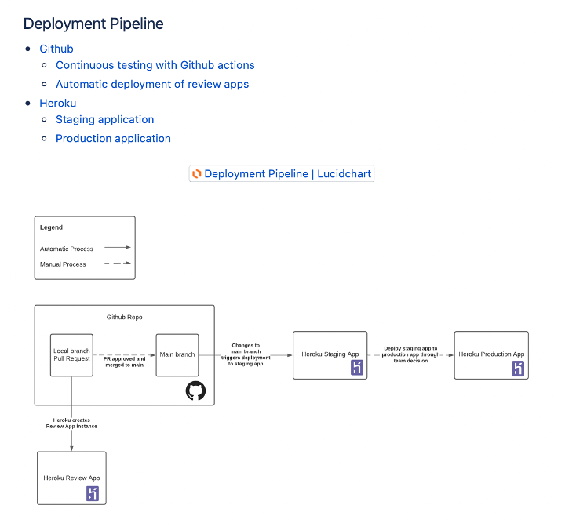

Chapter 10: Architecture
Contents
Chapter 10: Architecture¶
Software architecture is the fundamental organisation of the system under development. It includes all components, their interactions, the environment in which they operate, and the principles used to design the software.
Once the application’s stack is chosen, it is important to outline the architecture of the system. Detailing the architecture serves the purpose of assuring the client that the development team has thought through the interactions of components and the principles that underpinned their development. It is required information to handover to the client at the end of semester, so they can continue development.
4+1 Architecture Model¶
There are many ways of documenting the architecture of software - the one we will teach is the 4+1 architecture model.
It was originally developed in the 1990s and is used to describe the architecture using several, concurrent views. End-users, developers, system engineers, and project managers all have unique views of the system, hence the viewpoints are used to describe it from their perspectives.
There are five views in the 4+1 view model:

Source: Medium
Logical View¶
The logical view is concerned with the functionality that the system provides to end-users. Domain and class diagrams are used to represent the logical view.
Examples of diagrams that can be used to support the logical model are domain and database models.


Process View¶
The process view deals with the dynamic aspects of the system, explains the system processes and how they communicate, and focuses on the run time behaviour of the system. Sequence state diagrams are used to represent this view.
Development View¶
This view is represented by the package diagram and illustrates a system from a programmer’s perspective and is concerned with software management. To demonstrate the development view, your team could describe the architectural goals and constraints, as well as system diagrams, and API descriptions (if any).


Physical View¶
The physical view depicts the system from a system engineer’s point of view. It is concerned with the topology of software components on the physical layer, as well as the physical connections between these components, and it represented using the deployment diagram.
Diagrams that can support the physical view are deployment diagrams.


Scenario/Use Case View¶
Shows a subset of important use cases and is represented using a use case diagram. Your team should select use case(s) of architectural significance to demonstrate using use case description and diagram, as well as a sequence diagram.


Extra Resources
Name |
Description |
|---|---|
The original paper. |